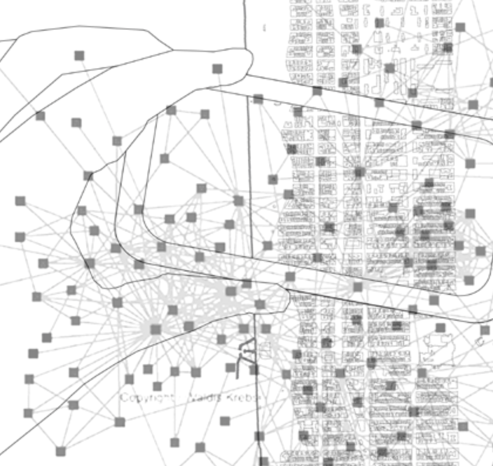
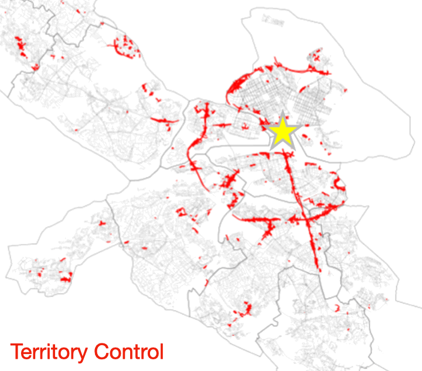

We use generative AI to explore the link between land use and 15-minute city usage. Findings reveal that a 50% increase in land use mix boosts national 15-minute usage by ~1% on national average and promotes equitable spatial distribution. Southern cities benefit most from small increases, while northeastern cities show the highest potential under larger targets.
We analyze how the built environment influence walking versus driving across income groups in NYC, LA, and Tampa using large-scale GPS data. Low-income individuals walk more, likely due to economic constraints. Sidewalk proximity promotes walking universally but affects groups differently: low-income individuals in NYC are more responsive, while high-income groups in LA and Tampa are more sensitive.


Inspired by Doreen Massey's view that places defy single-dimensional categorization, we use social media, POI, zoning data, neural networks, and NLP (e.g., ChatGPT) to uncover dominant urban narratives in U.S. cities. This helps planners, investors, and the broad public develop insurgent planning strategies.
We are conducting an analysis that integrates multi-scale air quality data with mobility CDR data to support equitable environmental planning.
Our findings aim to inform stakeholders about PM 2.5 exposure among K-12 student groups of different racial demographics, both while stationary and in motion.


We use graph-based AI models, social media data, and mobility data to analyze alignments and mismatches between social media connections and travel volumes in U.S. cities, predicting emerging regional centers.
Using large-scale street view imagery in Stockholm, we evaluate Jan Gehl's urban safety theory. Greenery and sidewalks boost safety, while walls and speed limits reduce it, with unexpected results for bike lanes. We propose two strategies: Territory Control for city centers and Pedestrian-Friendly Design for suburbs.


We construct a generative adversarial network (GAN) to predict detailed land surface temperature maps based on land cover data in New York City. It provides designers with fast, fine-grained predictions and visualizations of the environmental impacts of their design proposals.
Using the "5Ds" urban design framework, we applied principal component analysis (PCA) and K-means clustering to GPS-based travel data from the Twin Cities region.
This analysis identified four trip clusters, offering valuable insights for agencies aiming to understand mobility patterns.


{kind=link}
{kind=link}
{kind=link}
{kind=link}
{kind=link}
{kind=link}
{kind=link}
{kind=link}
{kind=link}